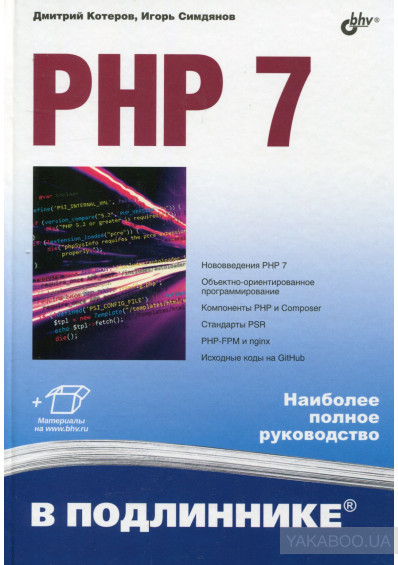

Книги для программистов |
|
PHP 7Рассмотрены основы языка PHP и его рабочего окружения в Windows, Mac OS X и Linux. Отражены радикальные изменения в языке PHP, произошедшие с момента выхода предыдущего издания: трейты, пространство имен, анонимные функции, замыкания, элементы строгой типизации, генераторы, встроенный Web-сервер и многие другие возможности. Приведено описание синтаксиса PHP 7, а также функций для работы с массивами, файлами, СУБД MySQL, memcached, регулярными выражениями, графическими примитивами, почтой, сессиями и т. д. Купить книгу Delphi. Программирование на языке высокого уровняКнига посвящена Delphi 7 Studio. Здесь изложены как приемы программирования в среде Delphi, ее главные составные части — галереи компонентов, хранилища объектов, вспомогательный инструментарии, так и сам язык программирования Delphi. Подробно рассматриваются компоненты программ, некоторые дополнительные возможности — динамически подключаемые библиотеки, интерфейсы, технология СОМ и система ModelMaker. Купить книгу |
Меню |
| Все права защищены (с) 2019 | |